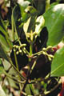
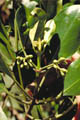

Common name in Singhalese : Punkanda, Rathugas
 

Diagnostic characters
Botany & morphology
Regeneration
Reproductive biology
Ecology
Distribution
Uses
Shrub, 1 to 2 m tall. Flowers peduncled in branched cymes. Hypocotyl terete or slightly ridged and warty throughout.
Leaves simple, entire, opposite, stipulate, ovate-oblong or obovate, apex emarginate or rounded, base cuneate, 6 - 12 x 3 - 6 cm, coriaceous.
Inflorescences axillary condensed cymes.
Flowers small, regular, white; calyx 5-lobed; petals 5, each with 3 clavate appendages at the tip and uncinate hairs at base; stamens 10, alternately long and short, ovary 3 celled, style short, stigma simple.
Fruits slightly conical, apex pointed; hypocotyle 20 – 25 cm long, gradually thickening towards pointed apex, deeply grooved and ribbed, reddish-brown; calyx lobes in fruit usually widely spreading or reflexed.
Stem base pyramidal with many stilt roots.
Dispersal and establishment of seedlings follow the pattern usual for the Rhizophoraceae (vivipary). Germination epigeal. Seedling development takes about a year.
Pollination by night flying insects, and by moths.
It is growing in harder and higher muddy soil of the inner mangrove with mangrove associated species. It is also observed in river and creek bank situations.
East Africa to Australia and the Pacific. Distributed in almost all the tidal swamps along both the coasts of Indian peninsula and Andaman and Nicobar Islands. West and South west of Sri Lankan coastal belt.
Bark decoction is used to arrest hemorrhage; leaves are used to treat skin diseases, leprosy, malaria; roots are used as purgative; wood used as fuel, for boat building and yields adhesive; flowers are a rich source of honey and bee wax.
Top of the page